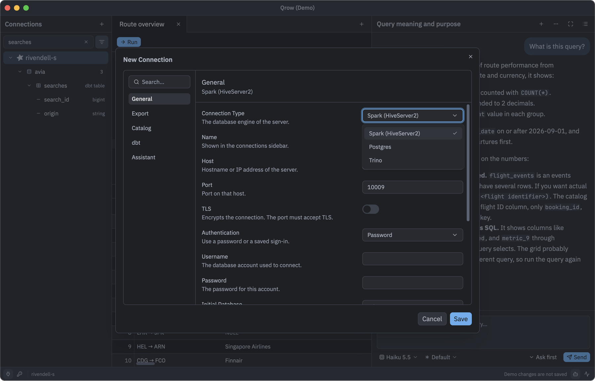

Connections
Connect directly to Kyuubi (Spark), Postgres, and Trino. No JVM, ODBC driver, or separately installed database driver.
- Kyuubi: HiveServer2 over SASL PLAIN, with a password or an OpenID Connect access token.
- Postgres: password authentication, TLS, and optional certificate verification.
- Trino: HTTP or HTTPS with a username, a password, or the browser sign-in of the coordinator.
- Passwords stay in macOS Keychain, the Linux Secret Service, or Windows Credential Manager.
- One OpenID Connect sign-in can authenticate several connections. Copy its settings to share them with a colleague.
